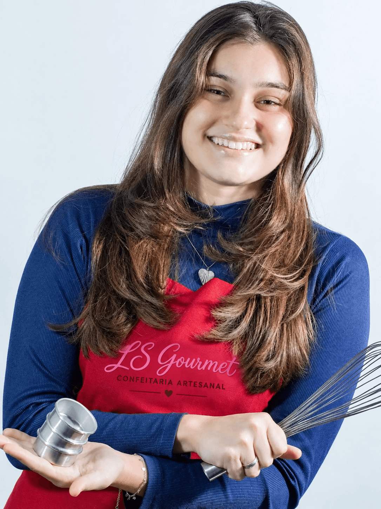

Nossa história
Como tudo começou
Tudo começou em 2023, num domingo qualquer, quando a Letícia decidiu preparar uns pães de mel caseiros só para experimentar. O que era pra ser uma receita de fim de semana virou paixão — e, sem muito planejamento, virou negócio. Assim nasceu a LS Gourmet.
O cuidado com cada doce
Cada doce da LS Gourmet passa pelas mãos da Letícia do início ao fim — da escolha dos ingredientes até a embalagem final. Os recheios são feitos aos poucos, no capricho, e cada encomenda é embrulhada com o mesmo cuidado da primeira venda. É esse zelo que faz a diferença no sabor — e no carinho de quem recebe.

A LS Gourmet hoje
Hoje, a LS Gourmet já passou da escola pros pontos de revenda em padaria familiar, mercado local e no Supermercado Savegnago — e chegou também ao iFood, levando os doces pra ainda mais gente em Campinas. Nota máxima no Google, clientela que só cresce, mas a essência continua a mesma: a paixão do primeiro pão de mel, feito num domingo qualquer.